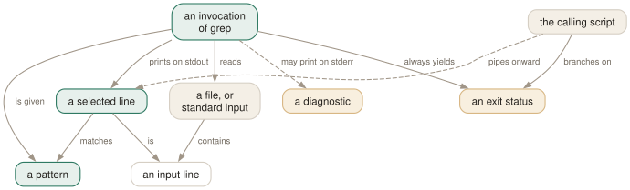

Day 01
What grep does
A line filter with three outputs — and the one you keep ignoring is the exit status.
By the end of today you can
- say where grep's input comes from in all three forms, without guessing
- distinguish “found nothing” from “something went wrong” without looking at the screen
- explain why a bare
grep patternappears to hang
Three outputs, and you only ever read one
grep reads its input one line at a time, decides for each line whether it matches, and prints the ones that do. That much everyone knows. What gets forgotten is that printing the lines is only one of the three things grep produces, and it is the least reliable of them.
The selected lines go to standard output. Diagnostics — unreadable files, bad patterns — go to standard error, which is why they appear on your screen but do not appear in the pipe. And every invocation, without exception, yields an exit status: 0 if at least one line was selected, 1 if none were, 2 if something went wrong.
Those three numbers are the difference between a script that works and a script that is quietly wrong. A blank screen means either “no matches” or “I could not open the file” — and on a terminal you see the error, but inside a pipeline with stderr redirected you do not. The status is the only thing that tells them apart.

Where the input comes from
There are three forms, and the third is the one people get wrong.
grep pat file...- Named files. Straightforward. With two or more of them the output sprouts a filename prefix you did not ask for.
grep pat- No file operand: standard input. From a terminal this looks like a hang — it is not, it is waiting for you to type. C-d ends it, C-c aborts it.
grep -r pat- No file operand and recursive: grep searches the working directory. This is the one case where a missing operand does not mean stdin, and it is a relatively recent convenience.
$ grep root /etc/passwd
root:x:0:0:Super User:/root:/bin/bash
$ echo $?
0
$ grep nosuchuser /etc/passwd
$ echo $?
1
$ grep root /etc/shadow
grep: /etc/shadow: Permission denied
$ echo $?
2
Three invocations that look almost identical on screen — one printed a line, two printed nothing much — and three completely different answers to the question “did that work?”.
The status is the only output a script can trust
Get into the habit now, because it is nearly impossible to retrofit. Whenever a grep prints nothing, type echo $? before you type anything else. You are training yourself to see the difference between 1 and 2, and that difference is where broken shell scripts come from.
Two smaller facts that fall out of the same model. grep always terminates the lines it writes, so a file whose last line lacks a newline comes back with one added. And grep never modifies its input — there is no in-place mode, no -i in the sed sense. The -i you are thinking of means ignore case, and it is the first thing on Day 2.
Knowing which grep you are running
This course is checked against GNU grep 3.12. Other greps exist and differ: BSD and macOS ship a different implementation, busybox grep is a subset, and several modern replacements install themselves under names that look familiar.
$ grep -V | head -1
grep (GNU grep) 3.12
Today's habit
Start ~/grep-recipes.sh today. It is this course's substitute for a config file, because grep has none: no dotfile, no rc, and GREP_OPTIONS was removed years ago — 3.12 ignores it without so much as a warning. What you accumulate instead is invocations, each with the reason written above it.
# ~/grep-recipes.sh - not sourced, just read. Copy lines out of it.
#
# Day 1: the three statuses. 0 = selected something, 1 = selected
# nothing, 2 = could not do the job. Only 2 is ever a bug.
grep -q PATTERN FILE; echo $?
New vocabulary
Commands
| Command | Does |
|---|---|
grep root /etc/passwd | Search one named file. No filename prefix on the output. |
grep root /etc/passwd /etc/group | Search several. Output gains a file: prefix automatically. |
grep root | No file operand: read standard input. From a terminal, this waits for you. |
grep -r root | No file operand and -r: search the working directory instead. |
cmd | grep root - | A file operand of - is standard input, mixable with real files. |
echo $? | Read the status grep just returned. The habit this whole day is about. |
Options
| Option | Does |
|---|---|
-V, --version | Print the version and exit. Know which grep you are actually running. |
--help | Print the option summary and exit. Shorter and better organised than the man page. |
-- | End of options. Everything after it is a pattern or a filename, never a flag. |
Drillsdo these in a real terminal, today
Self-check
Answer out loud first, then unfold.
A deploy script does if grep -q ERROR "$logfile"; then alert; fi. The log file was never created. What happens?
grep prints No such file or directory to stderr and exits 2. The if treats any non-zero status as false, so the branch is skipped and no alert fires. A missing log file and a clean log file are indistinguishable to this script.
The fix is to stop conflating the two. Test for the file first, or capture the status: grep -q ERROR "$logfile"; case $? in 0) alert;; 1) :;; *) die "cannot read $logfile";; esac. Day 9 comes back to this.
You run grep -q ERROR app.log missing.log and get exit status 0 even though missing.log does not exist. Why?
-q is documented to exit zero the moment a line is selected, even if an error was detected. A match was found in app.log, so grep stopped and reported success; the unreadable second file never got a chance to change the answer.
Change the pattern so nothing matches and the status flips to 2, not 1. So -q hides errors only when it succeeds — which is exactly when you are least likely to check.
The manual page says the default for -d is read, "read directories just as if they were ordinary files". So why does grep hello /etc print Is a directory instead of reading it?
Because it does exactly what the page says, and on Linux that fails. grep opens the directory and calls read(2) on it; the kernel refuses with EISDIR and grep reports the error it got. Passing -d read explicitly produces the identical message, which is the proof.
The wording is a historical artefact of systems where reading a directory returned its raw contents. What you want is -r, and -d skip if you would rather have silence and status 1.
Your file's last line has no trailing newline. You grep it and pipe the result to wc -c, and the byte count is one higher than you expect. Where did the byte come from?
grep put it there. It reads the truncated last line as a line anyway and writes it out terminated, so a file ending ...b comes back as ...b\n.
grep's output is always a well-formed sequence of lines regardless of what the input was. That is usually a kindness, and occasionally — when you are checksumming or byte-counting the result — a silent corruption.
Cheat sheet
grep PAT FILE # one file - no filename prefix on output
grep PAT FILE1 FILE2 # two files - filename prefix appears, unasked
grep PAT # no operand - reads stdin (looks like a hang)
grep -r PAT # no operand + -r - reads the working directory
cmd | grep PAT - # '-' is stdin as a file operand, mixable
grep -- -v FILE # '--' ends options; the pattern is literally -v
# exit status - the output you are not reading
0 at least one line selected
1 no line selected; nothing went wrong
2 error (unreadable file, bad pattern). Only this one is a bug.
echo $? # type this every time grep prints nothing
Everything through Day 01
Commands
| Command | Does |
|---|---|
grep root /etc/passwd | Search one named file. No filename prefix on the output. |
grep root /etc/passwd /etc/group | Search several. Output gains a file: prefix automatically. |
grep root | No file operand: read standard input. From a terminal, this waits for you. |
grep -r root | No file operand and -r: search the working directory instead. |
cmd | grep root - | A file operand of - is standard input, mixable with real files. |
echo $? | Read the status grep just returned. The habit this whole day is about. |
Options
| Option | Does |
|---|---|
-V, --version | Print the version and exit. Know which grep you are actually running. |
--help | Print the option summary and exit. Shorter and better organised than the man page. |
-- | End of options. Everything after it is a pattern or a filename, never a flag. |